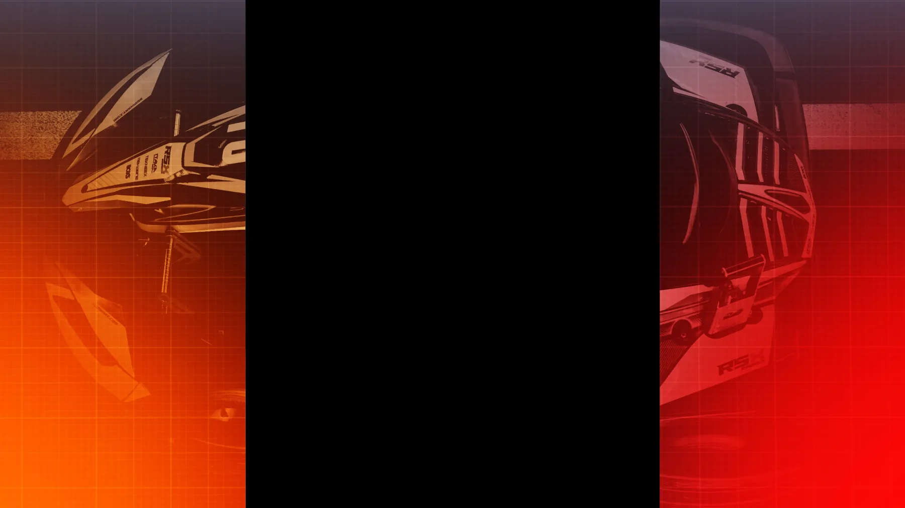
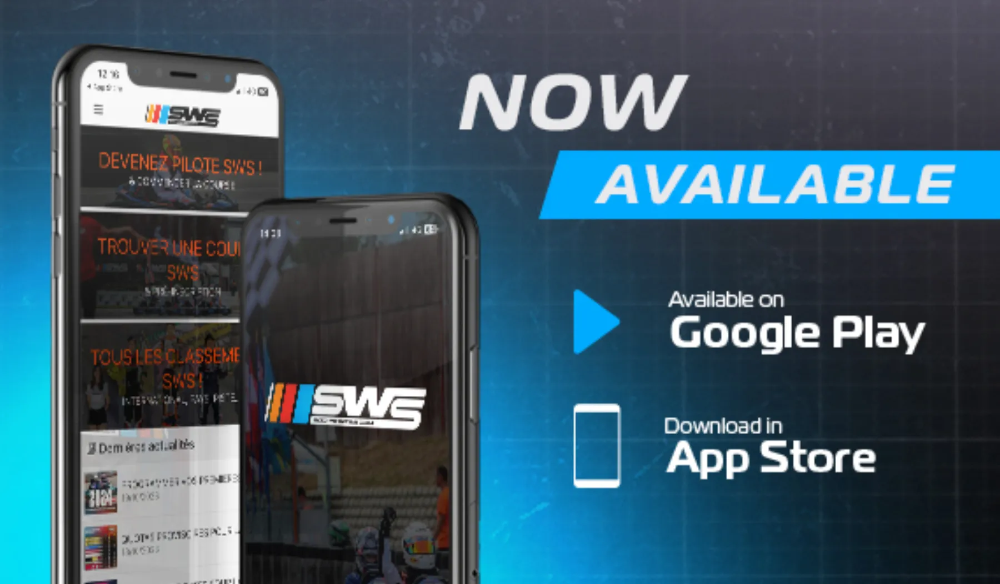
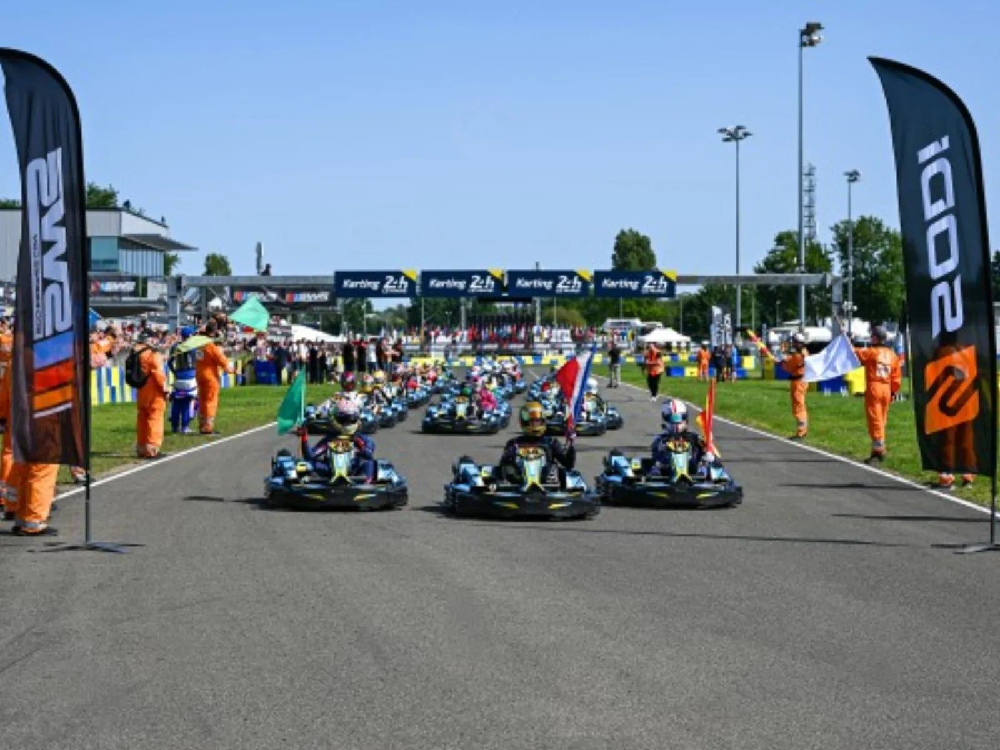
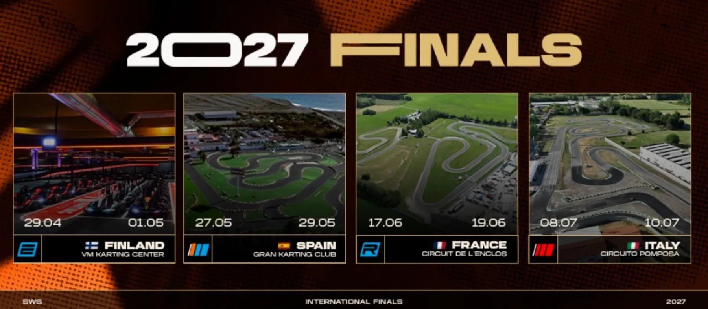
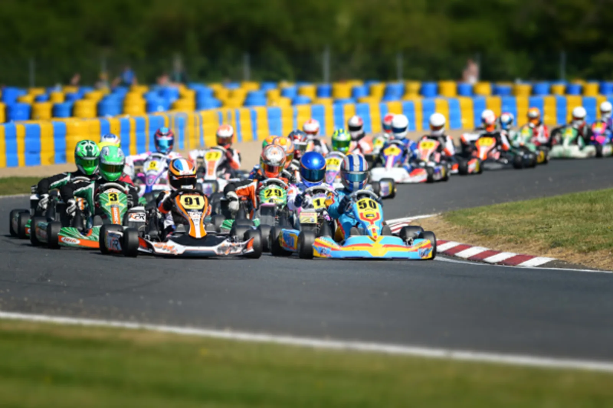
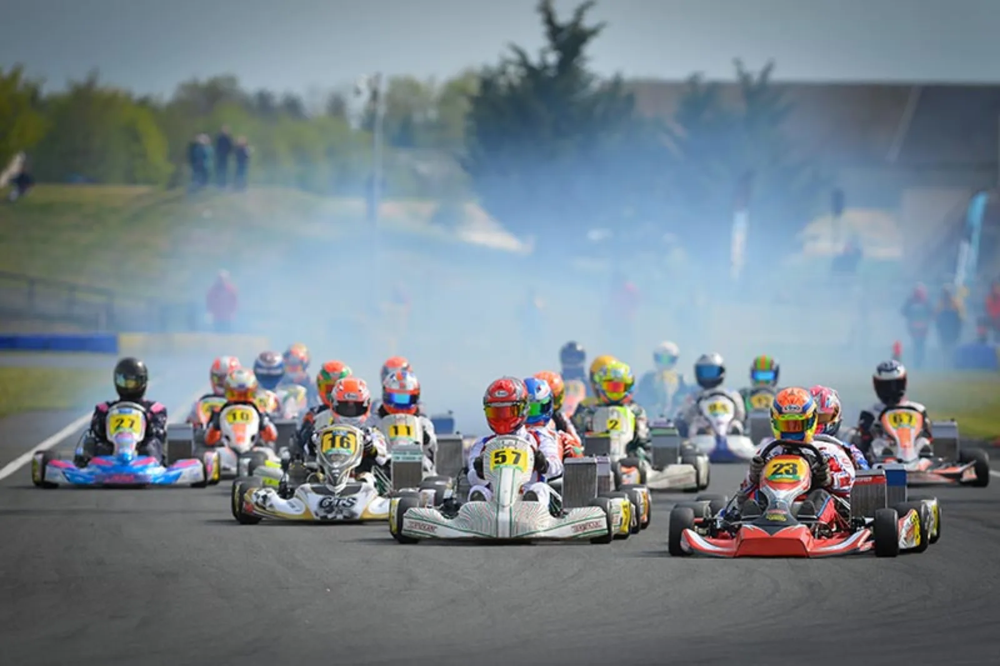
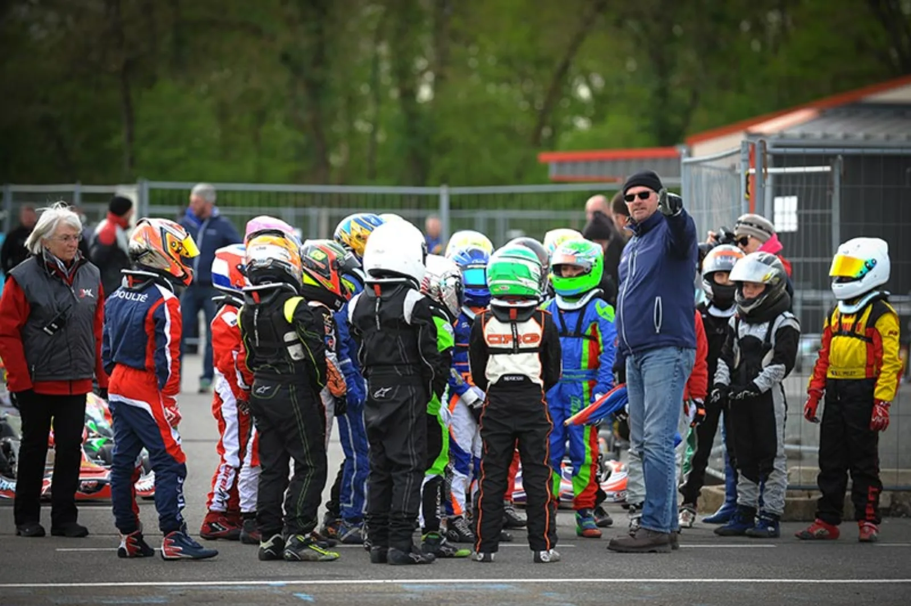
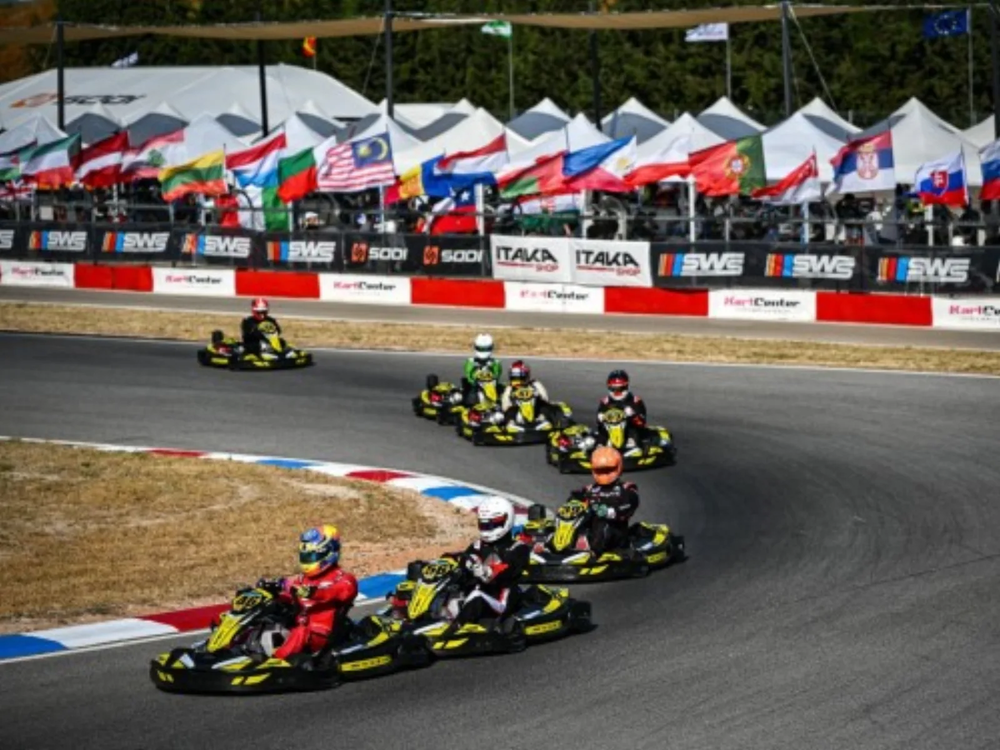
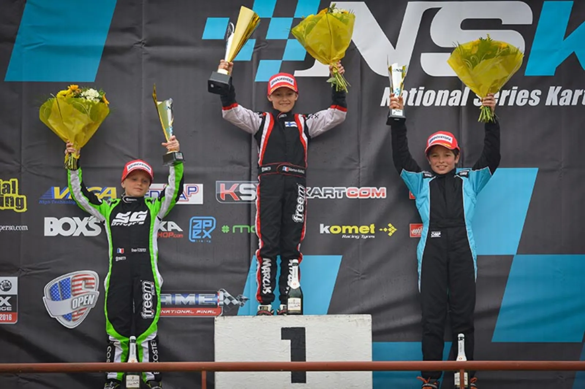
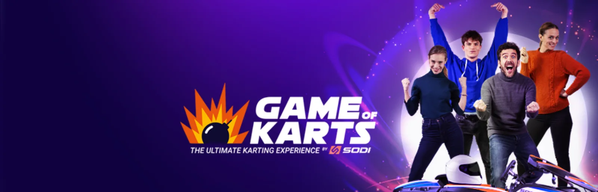

Roulez, classez-vous, qualifiez-vous.
Le plus grand classement de karting loisir au monde. Gratuit, ouvert dès 7 ans, sur toutes les pistes équipées en karts SODI. Chaque session chronométrée compte, chaque saison mène à une finale mondiale.
Trois tours de piste,
un classement mondial.
Lancées en 2009 et pilotées par 3MK Events, les Sodi World Series transforment chaque session de karting loisir en manche de championnat. Application iOS et Android, 50 courses par jour, 20 000 épreuves par an.
Roulez sur une piste SWS
760 pistes partenaires dans plus de 70 pays. Créez votre profil gratuit, vos sessions chronométrées sont automatiquement enregistrées.
Grimpez au classement
Sprint Cup, E-Sprint, R-Sprint, Endurance Cup, Junior, Kid, Women's, Master, Iron Kart, Regional Cups : un format pour chaque pilote.
Qualifiez-vous pour la finale
Les meilleurs de chaque pays se retrouvent à la finale internationale. 16 places par an pour les Rotax Max Challenge Grand Finals.

Le lien entre vos karts
et vos clients.
Pour un exploitant, les SWS sont un moteur de fidélisation : le pilote revient pour améliorer son temps, défier ses amis, se qualifier. Pour Sodikart, c'est la plus grande communauté de karting loisir au monde, qui roule sur ses karts.
Le Mans 2026 :
420 pilotes, 47 nations.
La 15e finale internationale a accueilli 420 pilotes de 47 nations et la première course de 24 heures de l'histoire des SWS, sur 130 karts neufs sortis de l'usine de Saint-Herblain.
Finale internationale · 24 h
420 pilotes · 47 nations · 130 karts neufs
E-Finals · 100 % électrique
138 pilotes de ~20 pays sur RSX2 et LRX2. Prochaine édition : Finlande 2027.
Finale internationale
400 pilotes en Espagne.
Finale et premières E-Finals
84 pilotes à Payerne pour la première finale électrique.
Finale internationale
360 pilotes.


3MK Events,
créateur de courses.
Depuis 2010, 3MK Events regroupe l'événementiel du groupe : les SWS, le National Series Karting, le Challenge Rotax France et les finales internationales. Des flottes Sodi pour les plus grandes courses du calendrier.

Depuis 2010Rotax Max Challenge Grand Finals
~400 pilotes de 60 pays, châssis officiels Sodi. Bahreïn 2025.

Depuis 2012National Series Karting
Le championnat national de référence pour les jeunes pilotes.

Depuis 1999Challenge Rotax France
La filière Rotax française, qualificative pour les Grand Finals.

Endurance24 Heures Karting du Mans & de Spa
Les classiques de l'endurance sur flottes Sodi.

Depuis 2016Sodi Racing School
L'école de pilotage de Salbris, dès 4 ans, avec la Kart Racing Academy FFSA.

ExpérienceGame of Karts
Un jeu vidéo de course pour de vrai : bonus, classement, écran R-Display.
760 pistes.
Laquelle est la vôtre ?
Recherchez par pays ou par ville : la carte affiche les pistes partenaires Sodi World Series et les implantations du groupe. Carte de démonstration : la version finale se connecte au localisateur et à l'application SWS.
Partenaires des Sodi World Series